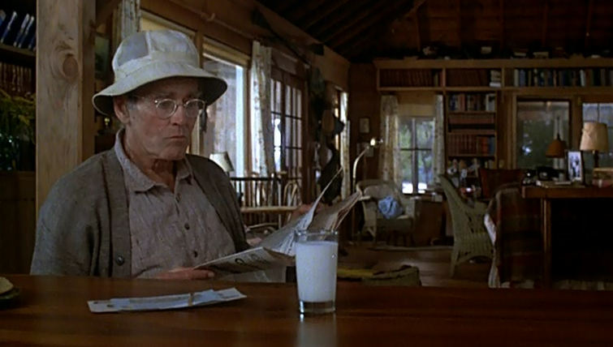
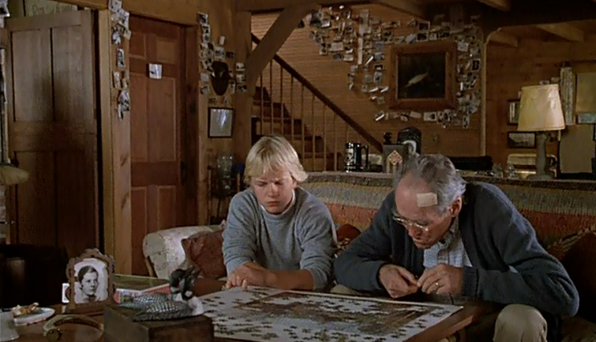

.png)
.PNG)
.PNG)
.PNG)
.PNG)
.PNG)
.JPG)
.JPG)
.PNG)
.PNG)


Looong before I started watching romantic comedies, I had a favorite movie that I watched over and over and over again. Â The house was so rustic. Â The setting on a lake was heaven to me,and Henry Fonda and Katharine Hepburn were perfectly cast as the aging Norman and Ethel Thayer. (He won an Oscar for best actor. Â She won for best actress.) The piano score for the soundtrack was played on our stereo more times than my husband would like to remember.

On Golden Pond. Â It began as a play written by Ernest Thompson. Â When Jane Fonda saw it, she decided she wanted to make it into a movie and have her father play the lead role. Â This would be her gift to him. Â So she purchased the movie rights and hired Ernest Thompson to write the screenplay…something he had never done before. Â (He won an Oscar for it.)

And long before I started writing this blog, I had hoped that someone would do a post on the house in the movie, but no one ever did. (Or at least I have never been able to find one.) Â So this post is selfishly for me. Â The house is not what we would call “pretty” today, but this movie always makes me feel good (even though the language in it is pretty bad).

Almost all of the interior scenes take place in the big living area. Â I did like the green wicker chair that Jane Fonda is sitting in in this scene.Very little of the kitchen is shown, but you can tell the porch is right off of it.
It has such a look of an old lake house.
And you know I loved that wrap around porch. In this scene, they are cleaning fish out on the porch.
There is one shot of the stairs leading up to the second floor, but you only see it reflected in the bedroom vanity mirror. I love that it has a window there above the stained beadboard that is hung horizontally. Â The second floor was added to the house specifically for the movie.
And we never really get to see an entire bedroom – or even a bed for that matter. Â Remember this was originally written to be a play with very few set changes. Â But there is one scene that does take place in what appears to be Norman and Ethel’s bedroom as they are getting ready to go fishing. Â You can see a couple of pieces of furniture in it here.
Now let’s move outside the house to the boats.  I think they are important to the story line in On Golden Pond. In an early scene in the movie, Norman and Ethel are seen canoeing out on the lake.  Katharine Hepburn had  hurt her shoulder in a game of tennis before filming started, but she picked up the hundred pound canoe and began carrying it to the shore.  This particular scene was cut in production, and Katharine Hepburn was reportedly NOT happy about it.
Of course the beautiful wooden motor boat was my favorite.
It was named Thayer IV, and I believe there were three and a half (really!) of them used in filming.
A couple of years ago the Thayer IV sold on Ebay for $47,000. Â It has since been completely restored to its movie appearance (in just six months!) by Katz’s Marina. Â This has been major news among Chris Craft fans. Â You can read more about the restoration and see a video of its first trip in the water here.
And a little more movie history for you. Â Did you know that Henry Fonda and Katharine Hepburn had never starred in a movie together prior to On Golden Pond? Â And more than that…they had never even met.
Both of the main characters were in their seventies when the movie was being made. Â Henry Fonda was in very poor health, and the crew was quite concerned for him. Â At one point, the canoe he and Katharine Hepburn were in capsized due to the wake of a passing motorboat. Â Mr. Fonda had to be wrapped in blankets for awhile. Â He wore a wetsuit for another scene in which he was to be filmed in the water, but Ms. Hepburn actually dove off the bow of a boat and swam over to him in this same scene – wearing only her regular clothes. Â This was in September, and the water was quite cold.
I am sorry the photo above is blurry, but I want you to take a good look at the house. Â This is the home in New Hampshire that was used for the movie set. Â Now take a look at this home.
Look familiar? 🙂 This home in New Hampshire on Squam Lake is available for rent, and this gazebo is also on the property.
Perhaps you recognize it also.
I think we need a trip to New Hampshire!  If you happen to be in that area near Holderness, there are boat tours that take you to sites around Squam Lake that were featured in the movie.  That would be a lot of fun to me. 🙂
On Golden Pond (Special Edition)
So what are you up to this weekend? Â A boat trip on a gorgeous lake? Â Watching a movie, or perhaps just catching up on chores at home? Â Whatever you have planned, I hope your weekend is enjoyable.
Until next time…


.PNG)
I absolutely adore this movie, it’s so peaceful and tranquil and a lovely story and the music is great. It would be amazing to stay there. If I can afford to travel from the UK, I will one day 🙂
It was lovely reading your post 🙂
[…] wrote a nice post about this movie at Talk of the House with more photos from the movie. For cabin rental information, visit Luxury Real Estate (wish […]
Kelly,
I’m embarrassed to admit, I’ve never seen this movie. It slipped through the cracks when it was first released and I’ve never taken the time to watch it on Netflix. I trust your taste in movies and will remedy this soon. I will also listen to the soundtrack tomorrow on Spotify. I love soundtracks and if you like them there is one you might enjoy, Finding Neverland, from the Johnny Depp movie. It’s beautiful.
We had a busy weekend but fun. Hope yours was wonderful too.
Karen
———————————————————————-
Good grief! I can’t believe you haven’t seen this classic. Yes, you need to watch it (just remember the language is pretty bad in it.) That darn song played in my head for days after researching for this post. And all of us LOVE the Finding Neverland soundtrack. You are so right. That one is absolutely beautiful. Our entire family went to see the movie together, and then our movie soundtrack fan son bought the music. It played on the stereo here for many many days. It is also addictive!
Kelly
My parents loved Katharine Hepburn and the spelling of my daughter’s name is because of it so I feel I must point out that you’ve misspelled it.
———————————————————————-
Thanks for letting me know Ann. I call myself checking…guess it wasn’t in the right place! If I had only been smart enough to look on the front of the dvd in the post. LOL
Kelly
My favorite house is the one from Home Alone….just love it. Funny how some of us notice the background as much if not more than the story!!
———————————————————————-
I just love the house from Home Alone, too. It is the perfect Christmas house to me. And yes, we all are just so crazy about houses we notice them more than the plot! The people who design the sets should love us!!
Kelly
Such a classic movie, I didn’t know much of what you wrote here. Imagine that Hepburn and Fonda had never crossed paths! (Not a lake girl so I have to pass on your enjoyment of the house, too dark and rustic and woodsy for me.)The boat, however, is a love, a true slice of Americana…. It’s been a glorious run of October days here in southern New England and although the height of foliage is past in the locale of the movie, it is peaking now where I am. There is a pumpkin festival on the grounds of the carousel today, but I will be indoors at a membership drive “Spa Day” for our statewide GFWC clubs. Sangria, apps, and spa treats for attendees – tough work but someone’s gotta do it! Enjoy your Sunday!
————————————————————————
Oh that boat…my dream! Your weekend sounded wonderful, AND beautiful. How “kind” of you to help with the membership drive. LOL A pumpkin festival on the grounds of a carousel sounds absolutely charming!
Kelly
One of the best movies ever! I wish I could live in a place like that. I wouldn’t care about updates, as long as there’s an indoor potty!! ;-)) As for what I’m doing this weekend, just enjoying the fall here and going to my daughter’s today for a Pampered Chef party.
———————————————————————
Oh yes, wouldn’t it be fun to live in a cabin like that? (Or at least for the summer.) Glad you enjoyed your fall weekend, and I hope you found lots to order at the Pampered Chef party!
Kelly
Just returned from Charleston, SC and visiting my first plantation/gardens–Magnolia. Enjoyed it so much with all the history– then toured the city. Loved on Golden Pond except for the language. Lake houses are special to me– spent my honeymoon in one, loved the movie “The Lake House” and now live in one — when I returned from my trip my husband had a surprise for me– he was having our upstairs patio rescreened/reroofed and had ordered new thermal glass doors with mini blinds inside for our bedroom doors!! Plus, plans to put white columns on our deck facing the lake to match the front entrance! Oh joy– a little added touch to my” little plantation!” My grandmother’s family lived in a plantation in Virginia when she was a child. She had studied to be a teacher but never used her degree– married and had 7 children moved to FL and lived in a FL wrap around porch style home– I loved it as a small child. Fond memories for me this very warm Oct. weekend. Excuse long reply– just got carried away with thinking of houses– one of our favorite subjects, right?!:)
———————————————————————–
Definitely one of our favorite subjects here, Louvina! So you go right ahead and talk away!! Your trip sounds like it was great, and I know you loved Charleston. I hope you got to eat some divine meals when you were in that area. I am ready for our warm October weekends to turn cold enough for a fire in the fireplace..perhaps this weekend when we drop into the thirties overnight. 🙂
Kelly
Hi Kelly, Thanks for this lovely post. I too love On Golden Pond. It’s surprising that Henry Fonda and Katherine Hepburn hadn’t been in a movie before because they seem like such a natural couple in the movie. I’ll have to watch it again too.
———————————————————————
I was surprised by that, too Anne. Who would have ever thought that, especially considering how famous each of them were…and they were close in age.
Kelly
Hi Kelly!
I too love On Golden Pond. It is one of my all time favorite movies. I have not watched it in years — now I think I need to do that!!!! Thanks for sharing 🙂
Megan
———————————————————————
Megan I think we all need to start an “On Golden Pond fan club!” 🙂 I hope you find a copy to enjoy watching again. It is truly a classic.
Kelly
We won’t be on a lake, but it is a glorious fall day on the coast so kayaking is an absolute must.
Thanks so much for sharing history of On Golden Pond. It was interesting to read that Henry Fonda and Katherine Hepburn had never met. She is one of my all time favorites.
———————————————————————
I need to send my husband and sons over to you. They all love kayaking! I am glad you enjoyed the post on the movie..one of my all time favorites. I couldn’t believe that Fonda and Hepburn had never met before filming. Imagine that!
Kelly
Beautiful post Kelly! I also love this movie, but no so much for the story – more for the sets and the nostalgia.
I am so happy that you dug up the real life lake cabin where it was filmed! It is always so much more gratifying to know that a beloved movie was filmed in a real place, rather than a sound stage.
———————————————————————–
Thank you Sarah. I am so glad you saw the post because I thought it was right up your alley. Aren’t there some great movie houses out there?!
Kelly
My in-laws have a small lake house at Lake Hartwell. We love going there in the summer. It had originally belonged to my husband’s grandparents. They had to relocate from their original home when the lake was built. It is just a small 2 bedroom/1 bath,which make up the back of the house,and a living room/ dining room/kitchen/laundry room (all one space) making up the front. It is crowded when we are all there. Makes for good memories.
———————————————————————–
That sounds like a wonderful place to relax with your family, Jayne. I am jealous!
Kelly
On Golden Pond is a wonderful movie on several levels – the actors, the scenery, that house, – love it all! The strong language is my only complaint. It is one of my all time favorite movies, though, and it has been awhile since I’ve watched it. Going to have to put this on my to do list this weekend!
———————————————————————-
Yes, there are so many things to love about it, and I do think the language is pretty strong in it. Language has never bothered me, but it does my husband. So he doesn’t particularly care for that aspect of it. I hope you had the opportunity to enjoy watching it again last weekend.
Kelly
Thanks for this post, Kelly! I love this movie. For Henry Fonda and Katherine Hepburn, the house, the lake, and the loons. I watch it at least once a year, usually when I’m in a nostalgic and sentimental mood. Last winter my 13-year-old son watched it with me for the first time. He enjoyed it, too, so now he’ll be part of the viewing tradition.
We live about an 1 1/2 hours south of Squam Lake and have spent time hiking in the area. The lake is lovely — especially in fall with the foliage.
Wouldn’t it be fun to rent this cottage… especially if they’ve got some comfy wicker chairs like the ones in the movie!
-Maureen
———————————————————————–
OH MY GOODNESS! You live near the real Golden Pond! I bet that area is gorgeous. And yes, it would be wonderful to rent the cottage…not sure if they have those great chairs, though. 🙂
Kelly
We have a place on a lake also and I love it… The kids have families and now we have the “grands” coming to the lake. I loved this movie and Ms. Kate!
———————————————————————-
Lucky lucky you, Vicki! I would LOVE to have a lake house…I actually think more than a beach house because I would enjoy it in more seasons. How fun to have all your family enjoying your place.
Kelly
That was great. I love that movie. We had a cabin on a lake when I was growing up and I sooo miss the quiet, peace, and beauty of it.
———————————————————————
Oh how I wish that we had had a cabin on a lake like you. How wonderful! That alone should make you like the movie. 🙂 I am happy that you enjoyed the post, Theresa.
Kelly